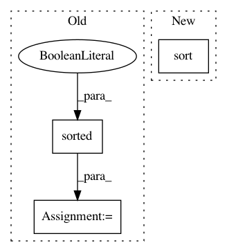

d6e00edb6b5e23c0aafc7b169f7517fe39da0fd6,mathics/builtin/linalg.py,Eigenvectors,apply,#Eigenvectors#Any#Any#,999
Before Change
// The eigenvectors are given in the same order as the eigenvalues.
try:
eigenvects = sorted(eigenvects,
key=lambda v_c: (abs(v_c[0]), -v_c[0]),
reverse=True)
// Try to sort the results as complex numbers
except TypeError:
try:
eigenvects = sorted(eigenvects,
After Change
eigenvects.sort(key=lambda v: (abs(v[0]), - re(v[0]), - im(v[0])),
reverse=True)
else:
eigenvects.sort(key=lambda v: from_sympy(v[0]).get_sort_key())
result = []
for val, count, basis in eigenvects:
// Select the i"th basis vector, convert matrix to vector,
In pattern: SUPERPATTERN
Frequency: 3
Non-data size: 3
Instances
Project Name: mathics/Mathics
Commit Name: d6e00edb6b5e23c0aafc7b169f7517fe39da0fd6
Time: 2020-09-06
Author: pablo-escobar@riseup.net
File Name: mathics/builtin/linalg.py
Class Name: Eigenvectors
Method Name: apply
Project Name: scipy/scipy
Commit Name: fc8c9693b2505b48b1e3dc7c2e477e757d42e549
Time: 2015-04-11
Author: pav@iki.fi
File Name: scipy/sparse/linalg/_onenormest.py
Class Name:
Method Name: _algorithm_2_2
Project Name: mathics/Mathics
Commit Name: deed936ca0bfa5998af0225fab99c47bd2bc4b6d
Time: 2020-09-06
Author: pablo-escobar@riseup.net
File Name: mathics/builtin/linalg.py
Class Name: Eigenvalues
Method Name: apply